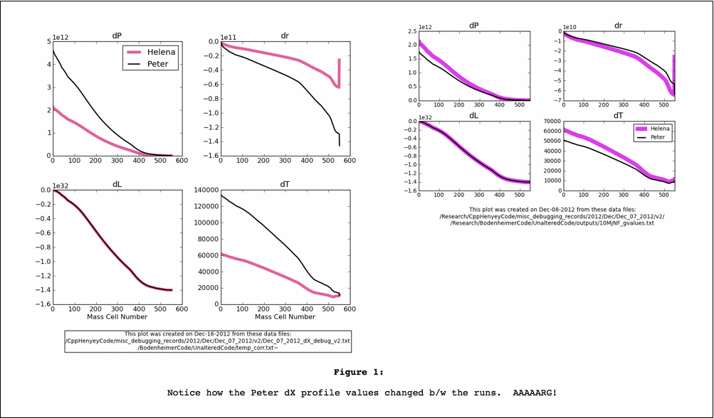

Date & Time:
Location: Campus
Computing context: Macho Mac
Continuing from last time:
Got frustrated? For some reason, couldn't get Helena to do the same thing it had done the day before that, and couldn't figure out why.
Today's Work:
Figure out where I left off last time
The dX profiles calculated by Peter's code changed by a factor of ~2.6 between two runs, and I couldn't figure out why (see Figure 1).

This was an issue, because I though I'd gotten Helena to produce dX profiles that agreed w/ his code (after fixing the outermost boundary condition discrepancies b/w the codes)
I need to be able to do a full run-to-convergence of a 10 Mjup model in both codes as the next step, and suddenly his code's behavior seems to have changed. So, can't verify if Helena's now working correctly until I fix whatever's now wrong w/ Peter's code
And then start up again from there!
I think my next step, at the time I stopped, was to go onto GitHub and compare the versions of Peter's code that I had archived there to track down the change responsible for the error.
Today, I spent most of my time figuring out how to set up an OpenOffice document template that would:
keep lists, outlines, and captions in Courier 10pt, and
that would also format graphics such that they'd show up correctly in the exported html files.
Can't figure out how to set this in a template, but can do it manually by setting the anchors on both the frame and the picture to "Anchor as character."
Spent lots of time trying to figure out how to set up a macro to automate the process, with no luck.